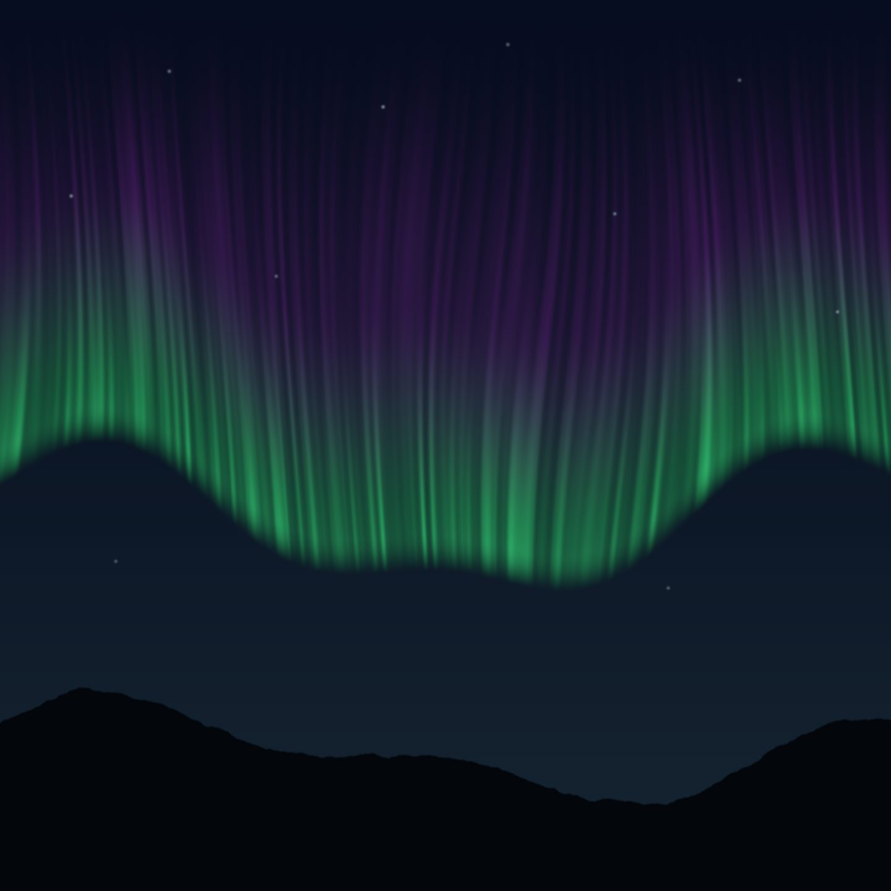
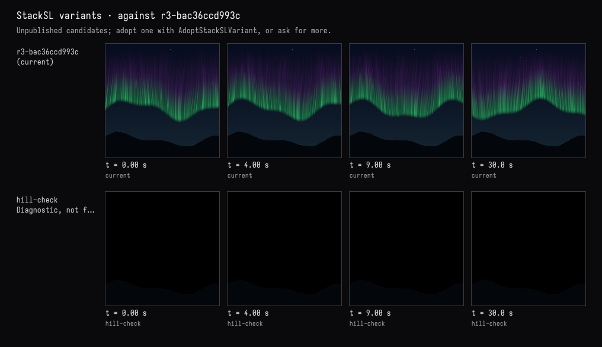
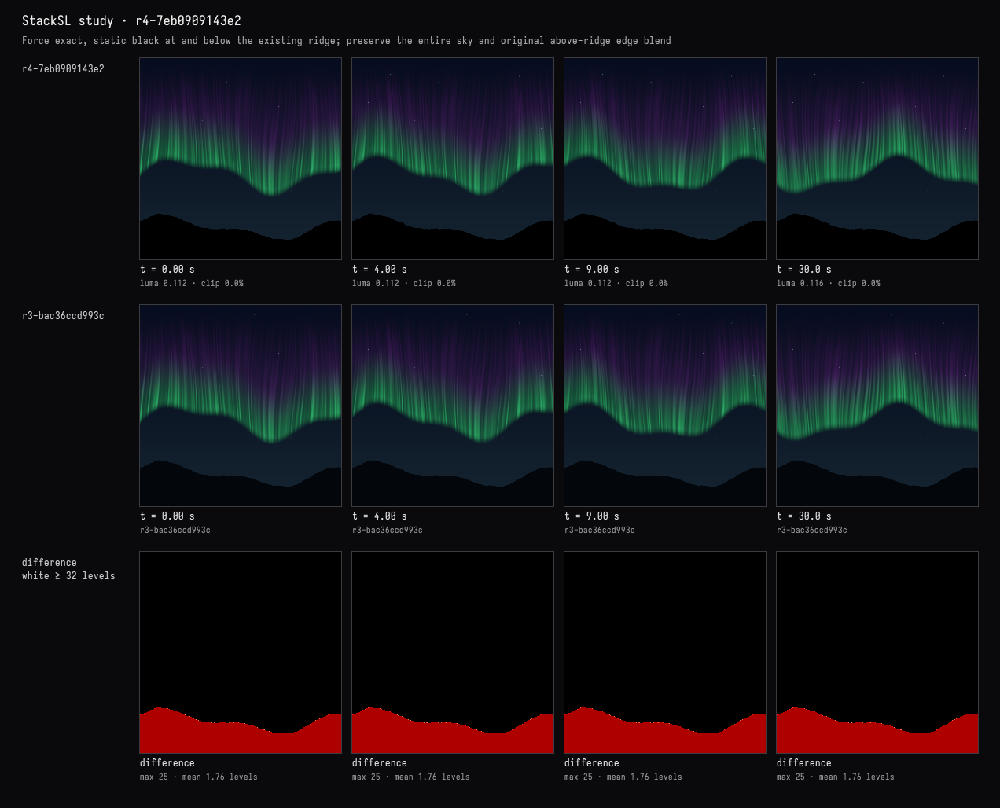
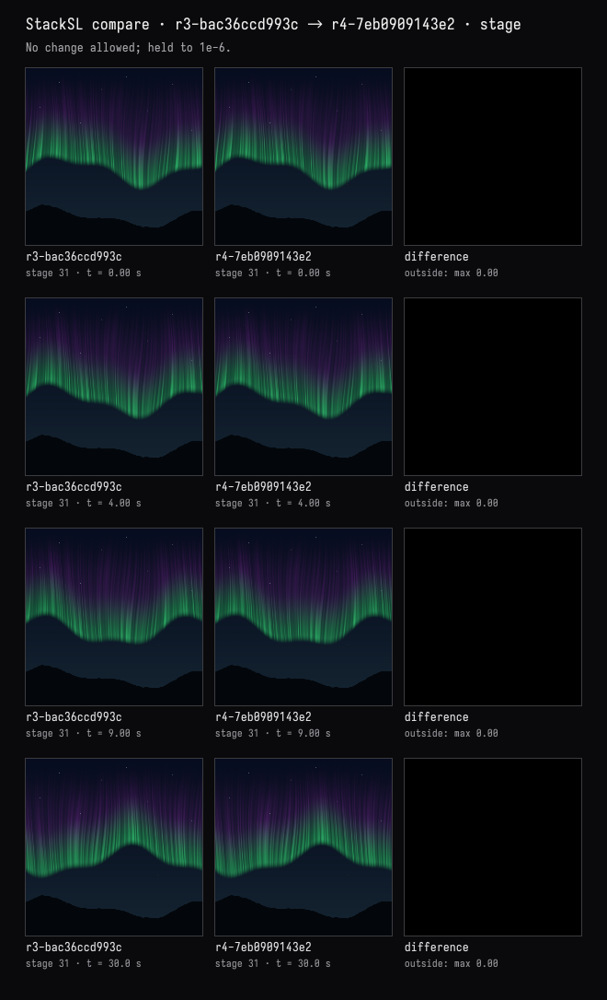
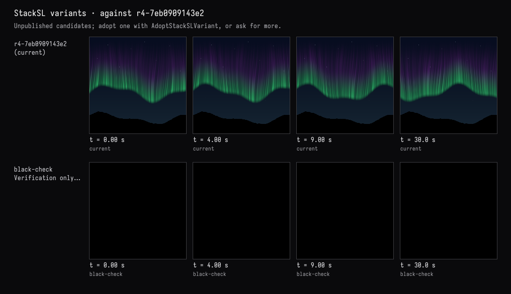
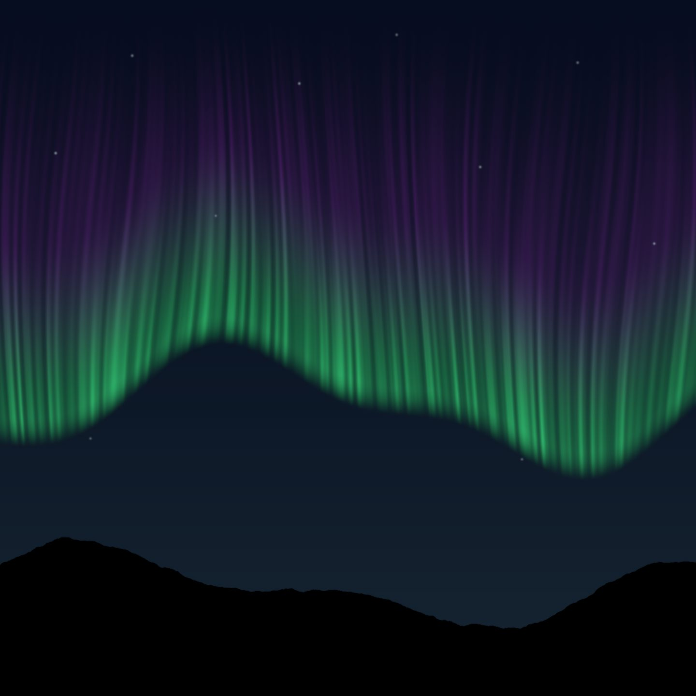

Still, black hills
The recorded exchange: the request, the tool activity, every image the tools returned to the model, and its reply. Expand tool activity to read the steps; open an image to see it full size.
The hills must stay perfectly still and black. Check whether anything moves below the horizon, and if it does, fix it without touching the sky.
Tool activity · 9 steps
Starting AI conversation
InspectStackSLStudy finished (1 ms)
CaptureRenderWindowRequest finished (32 ms)
TryStackSLVariants finished (884 ms)
PatchStackSLStudy finished (1139 ms)
CompareStackSLStudy finished (634 ms)
TryStackSLVariants finished (868 ms)
CaptureRenderWindowRequest finished (549 ms)
Completed






Checked below the ridge at 0, 4, 9, and 30 seconds: no motion was detected, but the hills were blue-black rather than pure black.
They’re now exactly black, using the unchanged, time-independent hill boundary. Every pixel above the ridge is preserved, including the aurora and stars.
Compilation passed, the isolated hill check returned uniformly black, and the live view matches the requested result.